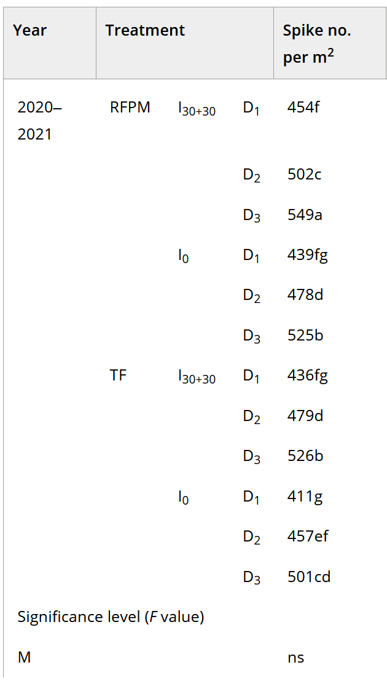

2 Think About Your Analytical Goals
Below are some things our ofice frequently says to researchers.
Throughout this guide, we have tried to explicitly state the goals of each analysis. This helps informs how to approach the analysis of an experiment. It can be difficult, especially for new scientists-in-training (i.e. graduate students), to understand what it is they want to estimate. You may have been handed a data set you had no role in generating and told to “analyze this” with no additional context. Or perhaps you may have conducted a large study that has some overall goals that are lofty, yet vague.
It can helpful to think about the exact results you are hoping to get. What does this look like exactly? Do you want to estimate the changes in plant diversity as the result of a herbicide spraying program? Do you want to find out if a fertilizer treatment changed protein content in a crop and by how much? Do you want to know about changes in human diet due to an intervention? What are quantifiable difference that you and/or experts in your domain would find meaningful?
Consider what the results would look like for (1) the best case scenario when your wildest dreams come true, and (2) null results, when you find out that your treatment or invention had no effect. It’s very helpful to understand and recognize both situations.
By “consider”, we mean: imagine the final plot or table, or summary sentence you want to present, either in a peer-reviewed manuscript, or some output for stakeholders. From this, you work backwards to determine the analytical approach needed to arrive at that final output. Or you may determine that your data are unsuitable to generate the desired output, in which case, it’s best to determine that as soon as possible.
By “consider”, we also mean: imagine exactly what the spreadsheet of results would say - what columns are present and what data are in the cells. If you are planning an experiment, this can help ensure you plan it properly to actually test whatever it is you want to evaluate. If the experiment is done, this enables you to evaluate if you have the information present to test your hypothesis.
By taking the time to reflect on what it is you exactly want to analyse, this can save time and prevent you from doing unneeded analyses that don’t serve this final goal. There is rarely (never?) one way to analyse an experiment or a data set, so use your limited time wisely and focus on what matters.
2.0.1 Know That Data Cleaning is Time Consuming
This has and will continue to occupy the majority of researcher’s time when conducting an analysis. Truly, we are sorry for this. But, please know it is not you, it is the nature of data. Please plan for and prepare yourself mentally to spend time cleaning and preparing your data for analysis.1 This will take way longer than the actual analysis! It is needed to ensure you can actually get correct results in an analysis, and hence data cleaning is worth the time it requires.
1 For an excellent set of basic instructions on data preparation, please see: (Broman and Woo 2018) Broman, K. W., & Woo, K. H. (2018). Data Organization in Spreadsheets. The American Statistician, 72(1), 2–10.
2.0.2 Interpret ANOVA and P-values with Caution
Informally, a p-value is the probability under a specified statistical model that a statistical summary of the data (e.g., the sample mean difference between two compared groups) would be equal to or more extreme than its observed value.
---American Statistical Association
The great majority of researched are deeply interested in p-values. This is not a bad thing per se, but sometimes the focus is so strong it comes at the expense of other valuable pieces of information, like treatment estimates! Russ Leanth, author of the emmeans package refers to this particular practice as “star gazing”.
It is important to evaluate why you want to do ANOVA, what extra information it will bring and what you plan to do with those results. Sometimes, researchers want to conduct an ANOVA even though the original goals of analysis were reached without it. Running an ANOVA may increase or decrease confidence in your other results. That is not at all what ANOVA is intended to do, nor is this what p-values can tell us. ANOVA compares across group variation to within group variation. It cannot tell us if anything is the ‘same’ (there’s a separate branch of analysis, ‘equivalence testing’, for that), and it cannot tell us specifically what is different, unless you are fortunate enough to only have 2 levels in your treatment structure. P-values provide no guarantee that something is truly different or not; it only quantifies the probability you could have observed these results by chance.
The American Statistics Association recommends that “Scientific conclusions and business or policy decisions should not be based only on whether a p-value passes a specific threshold.”2 That article also explains what p-values are telling us and how to avoid committing analytical errors and/or misinterpreting p-values. If you have time to read the full article, it will benefit your research!
2 Wasserstein, R. L., & Lazar, N. A. (2016). The ASA Statement on p-Values: Context, Process, and Purpose. The American Statistician, 70(2), 129–133.
The main problematic behavior I see is researchers using p-values as the sole criteria on whether to present results: “We wanted to test if x, y and z had an effect. We ran some model and found that that only x had a significant effect, and those results indicate…” (while results with a p-value > 0.05 are ignored).
A better option would be to discuss the the results of the analysis and how they addressed the research questions: how did the dependent variable change (or not change) as a result of the treatments/interventions/independent variables? What are the parameters or treatment predictions and what do they tell us with regard to the research goals? And to bolster those estimates, what are the confidence intervals on those estimates? What are the p-values for the statistical tests? P-values can support the results and conclusions, but the main results desired by a researcher are usually the estimates themselves - so lead with that!
To learn more about common pitfalls in interpreting p-values, check out our blog post on the subject and/or this paper3 on the subject.
3 Greenland S, Senn SJ, Rothman KJ, Carlin JB, Poole C, Goodman SN, Altman DG. (2016) Statistical tests, P values, confidence intervals, and power: a guide to misinterpretations. Eur J Epidemiol. 31(4):337-50. doi: 10.1007/s10654-016-0149-3.
2.0.3 Comments on Hypothesis Testing and Usage of Treatment Letters
Often, I see researchers use compact letter display (e.g. “A”, “B”, “C”, ….) for indicating differences among treatments. This makes for concise presentation of results in tables and figures, but it can both kill statistical power and misses nuance in the results.

Image from a paper published in 2024. Although this was a fully crossed factorial experiment, compact letter display was implemented across all treatment combinations, resulting in some nonsensical comparisons among some more informative contrasts.
Implementing compact letter display can kill statistical power (the probability of detecting true differences) because it requires that all pairwise comparison being made. Doing this, especially when there are many treatment levels, has its perils. The biggest problem is that this creates a multiple testing problem. The RCBD example in this guide has 42 treatments, resulting in a total of 861 comparisons (\(=42*(42-1)/2\)), that are then adjusted for multiple tests. With that many tests, a severe adjustment is likely and hence things that are different are not detected. With so many tests, it could be that there is an overall effect due to treatment, but they all share the same letter!
The second problem is one of interpretation. Just because two treatments or varieties share a letter does not mean they are equivalent. It only means that they were not found to be different. A funny distinction, but alas. There is an entire branch of statistics, ‘equivalence testing’ devoted to just this topic - how to test if two things are actually the same. This involves the user declaring a maximum allowable numeric difference for a variable in order to determine if two items are statistically different or equivalent - something that these pairwise comparisons are not doing.]
Another problem is that doing all pairwise comparison may not align with experimental goals. In many circumstances, not every pairwise combination is of any interest or relevance to the study. Additionally, complex treatment structure may necessitate custom constrasts that highlight differences between the marginal estimate of multiple treatments versus another. For example, there may be 2 levels of ‘high’ nitrogen fertilizer treatment with two different sources (i.e. types of fertilizer). A researcher may want to contrast those two levels together against ‘low’ nitrogen treatment levels.
Often, researchers have embedded additional structure in the treatments that is not fully reflected in the statistical model. For example, perhaps a study is looking at five different intercropping mixtures, two that incorporate a legume and 3 that do not. Conducting all pairwise comparisons with miss estimating the difference due to including a legume in an intercropping mix and not incorporating one. Soil fertility and other agronomic studies often have complex treatment structure. When it is not practical or financially feasible to have a full factorial experiment, embedding different treatment combinations in the main factor of analysis can accomplish this. This is a good study design approach, and we have statistical tools to analyze it.